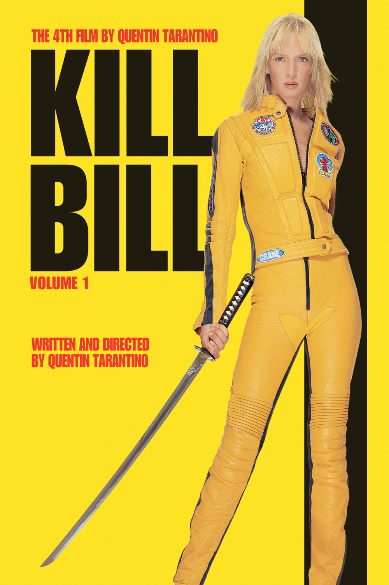
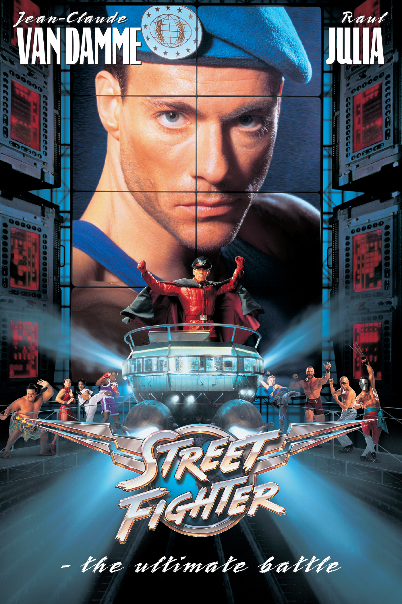

Vincent Salamand
Programmer @HelloWorld
After 40 years in tech making a shit ton of money, I launched HelloWorld, a non-profit charity organization with a mission to make the world a better place for people like me through technology.
My favorite movies
|  |
Kill BillA former assassin, known simply as The Bride (Uma Thurman), wakes from a coma four years after her jealous ex-lover Bill (David Carradine) attempts to murder her on her wedding day. Fueled by an insatiable desire for revenge, she vows to get even with every person who contributed to the loss of her unborn child, her entire wedding party, and four years of her life. After devising a hit list, The Bride sets off on her quest, enduring unspeakable injury and unscrupulous enemies. |
|  |
Street FighterGen. Bison (Raul Julia), the evil dictator of Shadaloo, captures a busload of relief workers and holds them for ransom. Col. Guile (Jean-Claude Van Damme) leads an international strike force to invade Shadaloo and rescue the hostages. Along the way, Guile recruits Chun-Li (Ming-Na Wen), a reporter and martial-arts expert whose father was killed by Bison years ago, two young con men (Damian Chapa, Byron Mann) and a sumo wrestler (Peter Navy Tuiasosopo). |

|
ScarfaceAfter getting a green card in exchange for assassinating a Cuban government official, Tony Montana (Al Pacino) stakes a claim on the drug trade in Miami. Viciously murdering anyone who stands in his way, Tony eventually becomes the biggest drug lord in the state, controlling nearly all the cocaine that comes through Miami. But increased pressure from the police, wars with Colombian drug cartels and his own drug-fueled paranoia serve to fuel the flames of his eventual downfall. |